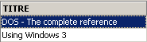
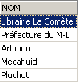

6. 高级 SQL
6.1. 简介
在本章中，我们将介绍
- SELECT 语句的更多语法，这些语法使其成为一个非常强大的查询命令，特别是在同时查询多个表时。
- 已介绍命令的扩展语法
为说明各种订单类型，我们将使用以下表，这些表用于一家中小型图书分销公司的订单管理：
6.1.1. CLIENTS 表
该表存储了公司客户的相关信息：
 |

客户的唯一标识符——主键 | |
客户姓名 | |
I=个人，E=企业，A=政府 | |
个人名字 | |
客户所在地（如为公司或政府机构）的联系人姓名 | |
客户地址 - 街道 | |
城市 | |
邮编 | |
电话 | |
您从什么时候开始成为我们的客户了？ | |
如果客户欠公司钱，请选“Y”（是）；否则请选“N”（否）。 |
6.1.2. ARTICLES 表
该表存储已售产品的信息，本例中为书籍。其结构如下：

书籍的唯一标识符（ISBN = 国际标准书号）——主键 | |
书籍的标题 | |
用于唯一标识出版商的代码 | |
作者姓名 | |
书籍简介 | |
今年销量 | |
上一年度销量 | |
上次销售日期 | |
上次交货数量 | |
上次交货日期 | |
售价 | |
进货成本 | |
最低订购量 | |
最低库存水平 | |
库存数量 |
其内容可能如下：

6.1.3. ORDERS 表
该表存储客户下单的相关信息。其结构如下：

订单的唯一标识符——主键 | |
该订单的客户ID - 外键 - 引用 CUSTOMERS(ID) | |
本订单的录入日期 | |
若订单已被取消，则为 O（是）；否则为 N（否）。 |

6.1.4. DETAILS 表
该表包含订单的详细信息，即所订购书籍的书名和数量。其结构如下：

订单编号——外键，引用 COMMANDES 表的 NOCMD 列 | |
已订购图书编号 - 引用BOOKS表中ISBN列的外键 | |
订购数量 |
其内容可能如下：

上文可见，订单编号 3（NOCMD）涉及三本书。这意味着客户同时订购了三本书。该客户的记录可在 [ORDERS] 表中找到，其中显示订单编号 3 由客户编号 5 下达。而 [CUSTOMERS] 表显示，客户编号 5 是位于塞格雷的 NetLogos 公司。
6.2. SELECT 语句
在此，我们将通过介绍新的语法来加深对 SELECT 语句的理解。
6.2.1. 多表查询的语法
SELECT 列1, 列2, ... FROM 表1, 表2, ..., 表p WHERE 条件 ORDER BY ... | |
此处的创新之处在于，列 column1、column2、... 来自多个表 table1、table2、...。如果两个表中有同名的列，则使用 tablei.columnj 的表示法来消除歧义。条件可以应用于来自不同表的列。 |
工作原理
构建表 table1、table2、...、tablep 的笛卡尔积。若 n_i 表示表 table_i 的行数，则生成的表将包含 n₁*n₂*...*n_p 行，其中包含来自不同表的所有列。 | |
将 WHERE 条件应用于该表。由此生成一个新表 | |
该表将根据 ORDER 子句中指定的方法进行排序。 | |
将显示 SELECT 语句后指定的列。 |
示例
我们使用前面展示的表格。我们想查看9月25日之后下单的订单详情：
SQL>select details.nocmd,isbn,qte from commandes,details
where commandes.datecmd>'25-sep-91'
and details.nocmd=commandes.nocmd

请注意，在 FROM 之后，我们需要列出所有被引用的列所属的表名。在上一个示例中，所选列均属于 DETAILS 表。然而，条件语句引用了 ORDERS 表。因此，需要在 FROM 之后列出后者。用于测试两个不同表中列是否相等的操作通常被称为等值连接。
该 SELECT 查询也可以写成如下形式：
SQL> select details.nocmd,isbn,qte from commandes
inner join details on details.nocmd=commandes.nocmd
where commandes.datecmd>'25-sep-91'
让我们继续看示例。我们希望得到与之前相同的结果，但显示的是所订购书籍的书名，而不是其ISBN：
SQL>select commandes.nocmd, articles.titre, details.qte
from commandes,articles,details
where commandes.datecmd>'25-sep-91'
and details.nocmd=commandes.nocmd
and details.isbn=articles.isbn

使用以下 SQL 查询也可得到相同的结果，但可读性较低：
SQL> select details.nocmd,articles.titre,details.qte from details
inner join commandes on details.nocmd=commandes.nocmd
inner join articles on details.isbn=articles.isbn
where commandes.datecmd>'25-sep-91'
上文对 [DETAILS] 表执行了两次内连接：
- 一次与 [ORDERS] 表进行内连接，以获取某本书的订购日期
- 另一个与 [ARTICLES] 表进行内连接，以获取所订购书籍的书名
我们还希望获取下单客户的姓名：
SQL>select commandes.nocmd, articles.titre, qte ,clients.nom
from commandes,details,articles,clients
where commandes.datecmd>'25-sep-91'
and details.nocmd=commandes.nocmd
and details.isbn=articles.isbn
and commandes.idcli=clients.id

我们还希望获取订单日期，并按降序显示这些日期：
SQL>select commandes.nocmd, commandes.datecmd, articles.titre, qte ,clients.nom
from commandes,details,articles,clients
where commandes.datecmd>'25-sep-91'
and details.nocmd=commandes.nocmd
and details.isbn=articles.isbn
and commandes.idcli=clients.id
order by commandes.datecmd descending

创建连接时，请遵循以下几条规则：
- 在 SELECT 之后，列出要显示的列。如果该列存在于多个表中，请在列名前加上表名。
- 在 FROM 之后，列出所有将被 SELECT 语句查询的表，即包含 SELECT 和 WHERE 之后所列列的表。
6.2.2. 自连接
我们希望查找零售价高于《Using SQL》一书的书籍：
SQL>select a.titre from articles a, articles b
where b.titre='Using SQL'
and a.prixvente>b.prixvente

此处的两个表在连接中是相同的：articles 表。为了区分它们，我们给它们起了别名：from articles a, articles b。第一个表的别名是 a，第二个表的别名是 b。即使表不同，也可以使用这种语法。使用别名时，必须在整个 SELECT 语句中使用该别名来代替它所指代的表。
6.2.3. 外连接
我们希望找出9月份进行过购买的客户，并显示其订单日期。其余客户则不显示该日期：
SQL>select clients.nom,commandes.datecmd from clients
left outer join commandes on clients.id=commandes.idcli
where datecmd between '01-sep-91' and '30-sep-91'

令人惊讶的是，这里我们并没有得到正确的结果。按理说，[CLIENTS] 表中的所有客户都应该出现在查询结果中，但实际情况并非如此。 当我们思考外连接的工作原理时，就会意识到：那些尚未下单的客户被匹配到了ORDERS表中的一行空记录，因此对应的日期为空（在SQL术语中称为NULL值）。这个日期不符合日期条件，所以相应的客户就没有显示出来。让我们尝试另一种方法：
SQL>select clients.nom,commandes.datecmd from clients
left outer join commandes on clients.id=commandes.idcli
where (commandes.datecmd between '01-sep-91' and '30-sep-91')
or (commandes.datecmd is null)

这次，我们得到了问题的正确答案。
6.2.4. 嵌套查询
SELECT 列[s] FROM 表[s] WHERE 表达式 查询运算符 ORDER BY ... | |
查询是一个 SELECT 语句，它返回 0 个、1 个或多个值的集合。然后我们有一个类型为 表达式 运算符 (val1, val2, ..., vali) 表达式和 vali 必须是同一种类型。如果查询返回单个值，则条件简化为 表达式 运算符 值 ，这是我们所熟悉的。如果查询返回一组值，我们可以使用以下运算符：
表达式 IN (val1, val2, ..., vali)：如果表达式求值为列表 vali 中的某个元素，则返回 true。
IN 的反义词
必须由 =、!=、>、>=、<、<= 引出 表达式 >= ANY (val1, val2, .., valn)：若表达式大于等于列表中任意一个值 vali，则返回 true
必须以 =、!=、>、>=、<、<= 开头 表达式 >= ALL (val1, val2, .., valn)：如果表达式大于等于列表中的所有有效值，则返回 true
查询：若查询返回至少一行，则为真。 |
示例
让我们重新审视那个已经通过等值连接解决的问题：显示售价高于《Using SQL》一书的书名。
SQL>select titre from ARTICLES
where prixvente > (select prixvente from ARTICLES where titre='Using SQL')

这种解决方案似乎比等值连接更直观。我们先使用 SELECT 语句进行初始筛选，然后对结果集进行第二次筛选。通过这种方式，我们可以依次执行多个筛选操作。
我们希望找出售价高于平均售价的书名：

哪些客户订购了上一条查询返回的书目？
SQL>select distinct idcli from COMMANDES,DETAILS
where DETAILS.isbn in
(select isbn from ARTICLES where prixvente
> (select avg(prixvente) from ARTICLES))
and COMMANDES.nocmd=DETAILS.nocmd

说明
- 我们从 DETAILS 表中筛选出价格高于平均书价的书籍所对应的 ISBN 码。
- 在上一步骤选出的行中，不包含客户 ID（IDCLI）。该字段位于 ORDERS 表中。通过订单号（NOCMD）建立两张表之间的关联，因此连接条件为 ORDERS.nocmd=DETAILS.nocmd。
- 单个客户可能多次购买了相关书籍中的某一本，这种情况下其 IDCLI 代码会多次出现。为避免这种情况，我们在 SELECT 语句后添加了 DISTINCT 关键字。DISTINCT 通常会从 SELECT 查询返回的行中消除重复项。
- 若要检索客户姓名，我们需要在 ORDERS 和 CUSTOMERS 表之间进行额外的连接，如下面的查询所示。
SQL> select distinct CLIENTS.nom from COMMANDES,DETAILS,CLIENTS
where DETAILS.isbn in
(select isbn from ARTICLES where prixvente
> (select avg(prixvente) from ARTICLES))
and COMMANDES.nocmd=DETAILS.nocmd
and COMMANDES.IDCLI=CLIENTS.ID

查找自9月24日以来未下单的客户：
SQL>select nom from CLIENTS
where clients.id not in
(select distinct commandes.idcli from commandes where datecmd>='24-sep-91')

我们已经看到，除了使用 WHERE 子句外，还可以通过将 HAVING 子句与 GROUP BY 子句结合使用来过滤行。HAVING 子句用于过滤行组。
与 WHERE 子句类似，其语法
HAVING expression opérateur requête
是可行的，但需遵守前述限制：该表达式必须是该子句中 expri 表达式之一
GROUP BY expr1, expr2, ...
示例
售价超过 200F 的书籍销量是多少？
首先，让我们按书名显示销量：
SQL>select ARTICLES.titre,sum(qte) QTE from ARTICLES, DETAILS
where DETAILS.isbn=ARTICLES.isbn
group by titre

现在，让我们筛选书名：
SQL> select ARTICLES.titre,sum(qte) QTE from ARTICLES, DETAILS
where DETAILS.isbn=ARTICLES.isbn
group by titre
having titre in (select titre from ARTICLES where prixvente>200)

或许更直观的是，我们可以这样写：
SQL>select ARTICLES.titre,sum(qte) QTE from ARTICLES, DETAILS
where DETAILS.isbn=ARTICLES.isbn
and ARTICLES.prixvente>200
group by titre

6.2.5. 嵌套查询
在嵌套查询中，存在父查询（最外层的查询）和子查询（最内层的查询）。只有在子查询完全执行完毕后，才会对父查询进行评估。
关联查询的语法与嵌套查询相同，但存在以下细微差别：子查询会对父查询的表执行连接操作。在这种情况下，父子查询对会针对父表中的每一行反复进行求值。
示例
让我们重新审视那个想要查询自9月24日以来未下单的客户姓名的示例：
SQL>
select nom from clients
where not exists
(select idcli from commandes
where datecmd>='24-sep-91'
and commandes.idcli=clients.id)

父查询操作的是 customers 表。子查询在 customers 表和 orders 表之间执行连接操作。因此，这是一个相关查询。对于 clients 表中的每一行，子查询都会运行：它会在 9 月 24 日之后下单的订单中搜索该客户的 ID。如果未找到（not exists），则显示该客户的姓名。然后，它会转到 clients 表中的下一行。
6.2.6. 编写 SELECT 语句的准则
我们多次看到，使用不同的 SELECT 语句可以得到相同的结果。让我们看一个例子：显示下过订单的客户：
连接

嵌套查询
返回相同的结果。
相关查询
SQL>
select nom from clients
where exists (select * from commandes where commandes.idcli=clients.id)
返回相同的结果。
作者克里斯蒂安·马雷（Christian MAREE）和盖伊·莱丹（Guy LEDANT）在其著作《SQL：入门、编程与精通》中提出了一些筛选标准：
性能
用户并不知道数据库管理系统（DBMS）是如何“处理”并找到他们所请求的结果的。因此，只有通过实践经验，他们才能发现某个查询比另一个更高效。马雷和勒丹根据经验断言，相关查询通常比嵌套查询或连接查询显得更慢。
表述
使用嵌套查询的表达通常比连接更易读且更直观。然而，这种方法并非总是适用。特别需要注意以下两点：
- 包含 SELECT 子句中指定列（SELECT col1, col2, ...）的表必须列在 FROM 关键字之后。随后将对这些表执行笛卡尔积运算，这被称为连接。
- 当查询显示来自单个表的结果，且筛选该表的行需要参考另一个表时，可以使用嵌套查询。
6.3. 语法扩展
为方便起见，我们此前主要介绍了各种命令的简写语法。在本节中，我们将介绍它们的完整语法。这些语法不言自明，因为它们与广为研究的 SELECT 命令的语法类似。
INSERT
INSERT INTO 表 (列1, 列2, ...) VALUES (值1, 值2, ...) | |
INSERT INTO 表 (col1, col2, ..) (查询) | |
已介绍了这两种语法 |
DELETE
DELETE FROM 表 WHERE 条件 | |
此语法众所周知。请注意，条件中可能包含使用 WHERE 表达式 运算符 (查询) 语法的查询 |
UPDATE
UPDATE 表 SET 列1=表达式1, 列2=表达式2, ... WHERE 条件 | |
该语法已在前文介绍过。请注意，条件中可以包含使用 WHERE 表达式 运算符 (查询) 语法的查询 |
UPDATE 表 SET (col1, col2, ..) = query1, (cola, colb, ..) = query2, ... WHERE 条件 | |
分配给各列的值可能来自一个查询。 |